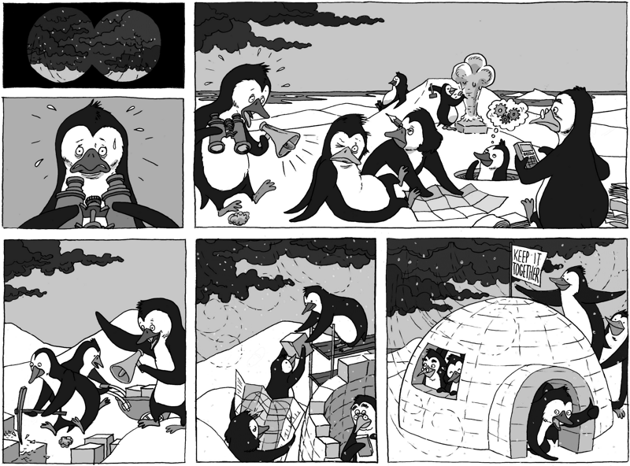

maakt het verschil in samenwerking

“ Onverwoestbaar is diegene die zowel het grootse als het kleine in zichzelf verdragen
kan ”
Copyright © 2016 AndersGebekt
Opbouwen van veerkrachtige werkrelaties
Leren via doen, ervaren & reflecteren
Supervisie, procesbegeleiding & opleiding
Omgaan met lastige emoties & situaties
Gespreks & relatievaardigheden
Zorgzaam omgaan met elkaar
